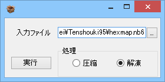

LS11のファイルを「展開」や「圧縮」することが可能なアプリケーションです。
EMN Project さんのところにある、信長の野望 天翔記 with パワーアップキット LS11 Archiver
とほぼ同じアプリケーションとなります。

改善点としては、数点。
例えば、「message.n6p」を、LS11 Archiever から選択(もしくはドラッグ＆ドロップなど)し、「解凍」を実行すると、
├ message.n6p
├ message ← ディレクトリ
├ message.000 ~ message.023
といった形に分解されます。
以下のような「解凍」したものだと想定される構成である場合に限り、
「message.n6p」を、LS11 Archiever 上で選択し、「圧縮」を実行すると、
message.000～message.023 のファイルが圧縮され、message.n6pへと格納されます。
├ message.n6p
├ message ← ディレクトリ
├ message.000 ~ message.023
この圧縮のファイルの指定の仕方が、EMN Project さんが提供しているツールとは
全く異なりますので注意してください。
LS11Archieverでは、「解凍と圧縮は、基本的には同一のファイルを指定する」ことになります。